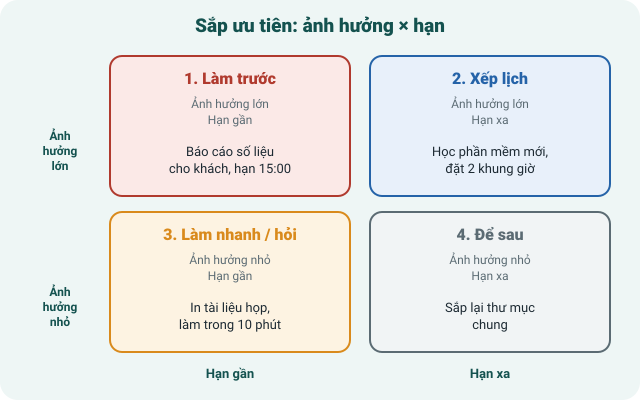

K5 · Lập kế hoạch và giữ cam kết công việc › Bậc 3 Vững vàng
Sắp ưu tiên khi nhiều việc cùng lúc và thương lượng lại hạn
Bài này làm Tờ 1: Bảng việc tuần của Sổ tay 90 ngày. Mẫu in. Nếu chưa quen ghi việc 5 cột, học trước bài Ghi lại việc được giao và báo sớm.
1. Mục tiêu
- Xếp các việc trong tuần vào 4 ô theo ảnh hưởng và hạn, kèm thời gian ước lượng.
- Viết tin nhắn xin chọn ưu tiên hoặc lùi hạn, có đề xuất cụ thể.
2. Khởi động truy xuất
- Danh sách việc 5 cột gồm những cột nào?
- Tin nhắn báo sớm khi có thể trễ hạn gồm 4 phần nào?
Đáp án
- Việc, kết quả, hạn, người giao, trạng thái.
- Tình trạng, lý do, phương án, đề nghị.
Xem lại: Ghi lại việc được giao và báo sớm.
3. Giải thích
Sau vài tuần, việc đến từ nhiều phía. Làm theo thứ tự nhận việc thì việc quan trọng dễ bị trễ. Bạn cần một cách sắp nhanh.
Bước 1. Hỏi hai câu cho mỗi việc.
- Ảnh hưởng: nếu trễ, ai bị ảnh hưởng? Khách hàng, tiền, an toàn là ảnh hưởng lớn.
- Hạn: hạn trong 1–2 ngày tới là gần.

Bước 2. Ước lượng thời gian. Ghi số phút hoặc số giờ cạnh mỗi việc. Cộng lại, so với thời gian bạn thực có trong tuần. Người mới thường ước lượng thiếu. Hãy cộng thêm khoảng một phần ba cho việc chưa làm bao giờ.
Bước 3. Khi không đủ thời gian, hỏi sớm. Đừng tự bỏ việc của ai. Cũng đừng im lặng làm thêm đến khuya rồi vẫn trễ.
Tin nhắn xin chọn ưu tiên
- Nêu các việc đang trùngTên việc, hạn, người giao.
- Nói rõ giới hạn"Em chỉ làm kịp một việc trước 15:00."
- Đề xuất cụ thểLàm việc nào trước, việc kia xong lúc nào.
- Xin quyết định"Anh chọn giúp em thứ tự nhé."
Nếu hai người khác nhau cùng giao việc gấp, hỏi người quản lý trực tiếp của bạn. Họ có quyền quyết định thứ tự.
Thương lượng lại phạm vi cũng là một lựa chọn. Ví dụ: "Em gửi bản số liệu chính trước 15:00, phần biểu đồ gửi sáng mai được không ạ?"
4. Ví dụ tại nơi làm việc Việt Nam
Tình huống giả định. Hà làm nhân viên kinh doanh được 5 tuần ở một công ty phân phối thiết bị văn phòng tại Đà Nẵng. Sáng thứ Ba, Hà có 4 việc.
| Việc | Người giao | Hạn | Ước lượng | Ô |
|---|---|---|---|---|
| Báo giá cho khách trường học | Trưởng nhóm | 15:00 hôm nay | 2 giờ | 1 |
| Nhập 40 đơn cũ vào phần mềm | Kế toán | Thứ Sáu | 3 giờ | 2 |
| In tài liệu họp chiều | Trưởng phòng | 13:30 hôm nay | 15 phút | 3 |
| Sắp lại thư mục khách hàng | Tự đặt | Không có | 1 giờ | 4 |
Kế toán nhắn thêm: "Em nhập đơn xong trước 12:00 nhé, chị cần đối chiếu." Hà thấy không kịp cả báo giá lẫn nhập đơn.
Hà nhắn trưởng nhóm: "Anh ơi, em đang có báo giá trường học hạn 15:00. Chị Mai kế toán cần 40 đơn trước 12:00. Em chỉ kịp một việc trước 12:00. Em đề xuất làm báo giá trước, nhập 20 đơn chị Mai cần gấp nhất trước 14:00. Anh chọn giúp em thứ tự nhé."
Vì sao cách này tốt: Hà không tự quyết thay hai người. Tin nhắn có đủ việc, hạn, giới hạn và một đề xuất. Trưởng nhóm chỉ cần trả lời "Đồng ý".
5. Thực hành
Tình huống giả định. Bạn là nhân viên hành chính mới ở một trường mầm non tư thục tại Biên Hòa. Thứ Hai bạn có: gửi thông báo họp phụ huynh (hạn thứ Tư, hiệu trưởng giao); kiểm kê đồ chơi (hạn cuối tháng); đặt suất ăn ngày mai cho 120 trẻ (hạn 16:00 hôm nay); trả lời 15 tin nhắn hỏi học phí (phụ huynh chờ từ sáng). Hiệu trưởng nhờ thêm: soạn tờ trình mua máy lọc nước trước 16:00.
Xếp 5 việc vào 4 ô, ghi ước lượng. Viết tin nhắn cho hiệu trưởng nếu không kịp.
Gợi ý 1
Việc nào trễ thì trẻ hoặc phụ huynh bị ảnh hưởng ngay? Đó là ảnh hưởng lớn.
Gợi ý 2
Suất ăn và tờ trình cùng hạn 16:00. Một trong hai việc có thể đề xuất lùi hoặc gửi bản ngắn trước.
Lời giải mẫu
- Ô 1 (làm trước): đặt suất ăn (30 phút); trả lời tin nhắn học phí (45 phút).
- Ô 1 hoặc hỏi lại: tờ trình máy lọc nước (1 giờ). Cần hỏi hiệu trưởng.
- Ô 2 (xếp lịch): thông báo họp phụ huynh, làm sáng thứ Ba (1 giờ).
- Ô 4 (để sau): kiểm kê đồ chơi, xếp vào tuần sau (3 giờ).
Tin nhắn mẫu: "Dạ cô, chiều nay em đặt suất ăn và trả lời phụ huynh về học phí. Tờ trình máy lọc nước em gửi bản nháp lúc 16:00, bản đủ báo giá gửi 10:00 sáng mai được không ạ? Thông báo họp phụ huynh em gửi cô duyệt trưa thứ Ba."
(Các việc và thời gian là giả định.)
6. Tự kiểm tra
Chọn đáp án. Mỗi lựa chọn đều có giải thích.
Câu 1. Bạn có 3 việc: báo giá cho khách hạn 11:00; dọn hộp thư; học khóa an toàn thông tin hạn cuối tháng. Việc nào làm trước?
-
Chưa đúng. Việc nhanh chưa chắc quan trọng. Dọn hộp thư ảnh hưởng nhỏ, hạn xa.
-
Đúng. Đúng. Ảnh hưởng tới khách và hạn gần, nên nằm ở ô 1.
-
Chưa đúng. Việc này quan trọng nhưng hạn còn xa. Hãy xếp lịch cho nó, không làm ngay.
Câu 2. Trưởng nhóm và một trưởng phòng khác cùng giao việc gấp, hạn trùng nhau. Bạn nên làm gì?
-
Chưa đúng. Người kia sẽ bất ngờ khi việc trễ. Thứ tự nên do quản lý trực tiếp quyết.
-
Đúng. Đúng. Quản lý trực tiếp có quyền quyết. Đề xuất sẵn giúp họ trả lời nhanh.
-
Chưa đúng. Cách này dễ làm giảm chất lượng cả hai việc, và không bền lâu.
Câu 3. Bạn ước lượng một việc mới làm lần đầu mất 3 giờ. Nên ghi bao nhiêu vào bảng?
-
Chưa đúng. Việc chưa làm bao giờ thường mất lâu hơn dự kiến.
-
Đúng. Đúng. Cộng thêm khoảng một phần ba giúp kế hoạch thực tế hơn.
-
Chưa đúng. Ước lượng thấp làm bạn nhận thêm việc rồi trễ hạn.
Câu 4. Câu nào là thương lượng lại phạm vi?
-
Chưa đúng. Câu này chỉ báo khó, không có đề xuất.
-
Đúng. Đúng. Bạn chia việc thành phần cần gấp và phần gửi sau, rồi xin đồng ý.
-
Chưa đúng. Từ chối hẳn mà không có phương án thường không phải bước đầu tiên.
7. Phản tư
- Tuần trước, việc nào bạn làm trước chỉ vì nó đến trước? Lẽ ra nó nằm ở ô nào?
- Lần gần nhất bạn ước lượng thiếu thời gian là việc gì? Thiếu bao nhiêu?
8. Áp dụng thật
Sáng thứ Hai tới, lập Tờ 1 cho cả tuần. Ghi ô và ước lượng cho mỗi việc. Cuối tuần, ghi thời gian thực tế cạnh ước lượng. So sánh để lần sau ước lượng sát hơn.
9. Siêu dữ liệu
| skill | K5 · Lập kế hoạch và giữ cam kết công việc |
|---|---|
| level | Bậc 3 · Vững vàng |
| group | N3 |
| framework_map | CSfW: 3a Plan and organise; SkillsFuture CCS: Self Management; NACE: Professionalism (chỉ dẫn chiếu) |
| updated | 2026-11-14 |
Hoàn thành bài
Đánh dấu đã học để site gợi ý lịch ôn sau 1, 3 và 7 ngày. Dữ liệu chỉ lưu trên máy của bạn.
Lịch ôn gợi ý: